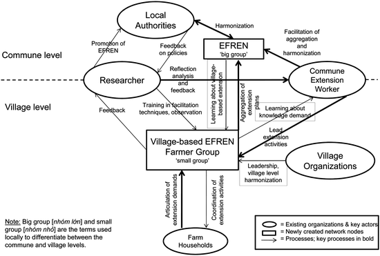

11.1 Introduction
In an era of progressively amplifying expectations towards food, the goal of agricultural producers is no longer to simply maximize production, but also to optimize across a far more complex landscape of quality, environmental sustainability, product traceability and rural development, to name just a few of the more prominent criteria. Despite the emergence of a myriad of innovations in recent years geared towards supplying the farmer with the appropriate support needed to keep abreast of these challenges, this combination of expectations has brought with it novel and complex changes for farmers to deal with. Among these changes, farmers are faced with not only having to physically introduce innovations or comply with new institutions, but also become acquainted with relevant handling information, understand basic functions and learn how to use and integrate new things into common practice, which together may be considered “the software” (Smits 2002) of an innovation, or simply the “knowledge” required to make full use of it. Against this background, knowledge can be increasingly viewed as simply a primary factor of agricultural production, along with the classical factors of land, labor and capital (STEPS Centre 2010).
The complexity, or often lack of information flows between actors that can be associated with the generation, communication and use of a certain innovation is known to exacerbate the difficulties in obtaining the necessary knowledge required to manage it (see e.g., Albrecht et al. 1989; Hoffmann et al. 2009; Leeuwis 2004; Sumberg et al. 2003).
Knowledge, and all processes associated with its generation, dispersion and utilization, can be seen as embedded in a wider contextual ‘landscape’ which consists of societal factors that transform only slowly over time, such as the political culture – including policy practices, institutional capabilities and organizational processes, as well as lifestyles and the economic system. The set-up of this landscape can favor or limit innovation.
At the center of this – within what literature commonly refers to as the ‘innovation system’ (Clark 2002; Röling 2006; Sumberg 2005) – there is, however, a smaller or larger number of actors each of whom follow individual strategies, beliefs, practices, perceptions and norms (Leeuwis 2004).
This view helps us to move away from a simple model of technical progress, to accept the broader (human) interactions behind innovation of all kinds – interactions that can be associated with a wide range of notions, such as networks, partnerships, or simply social relations. In other words, the development, dispersion and utilization of innovations can be largely understood as a social process. For example, it has been argued that relatively strong interaction between actors is crucial, because tacit and informal elements of knowledge can be made explicit and thus can be absorbed and shared (see, for example, Leeuwis 2004). Moreover, as Schad et al. (2011) found within the framework of the Uplands Program, close interaction also helps to reduce the uncertainty inherent in innovation processes.
Because marginalized people so often lag behind the development of societies and repeatedly lose out on or fail to participate in innovation processes, the appraisal of alternative innovation pathways needs to focus specifically on finding new ways to make knowledge accessible and to enable its efficient dispersion and application. Such alternative approaches should seek to link actors in the innovation system with the interests of excluded communities, so that together they can help to shift the distributional outcomes of innovation towards the needs of the poor. Agricultural extension, or more broadly speaking rural advisory services, can make a significant contribution to this development; therefore, against the background of locally diverging contexts within the mountainous areas of Southeast Asia, the potential role of well-designed advisory services in fostering rural and agricultural development is self-explanatory, its aims being:
- To provide a ‘bridging-function’ between those innovations needed locally (‘the demand side’) and the suppliers of such innovations
- To support farmers in making responsible choices which, from their point of view, are optimal in terms of their given situation and, therefore, facilitate behavioral changes in farmers that help with innovation adoption
- To act as a broker and network facilitator; to match actors in the innovation system, and
- To act as an initiator of novel modes of learning and – during the course of this help – to evaluate and improve farmers’ own opinion-forming and decision-making skills.
But to what extent does the Vietnamese agricultural knowledge system already meet these requirements, or more specifically, what development processes geared towards these functional requirements have been observed since the formation of public extension services in the early 1990s? Also, how have the growing spaces used for participation and demand articulation been operationalized? Moreover, and building on our long-term observations of these processes, what new approaches to extension or indeed modifications to the current approaches, need to be taken in order to realize greater client-orientation?
To understand the current dynamics of the Vietnamese agricultural knowledge and information system (AKIS), a brief journey through the recent history of the economic, social and political system is required in order to explore the government’s role in rural advisory work and its specific role in terms of agricultural extension. We therefore preface our discussion with a sketch of the AKIS’ evolution and its typical features. Accordingly, Sect. 11.2 will combine an historical perspective gained from the literature with a brief overview of the existing institutional and operational context, as appraised during our field research.
This section will be followed by a more normative overview of what ‘modern’, that is, responsive and client-oriented approaches to agricultural extension should look like, and how ‘up-to-date modes’ of learning might be organized (see Sect. 11.3). This will serve as a reference point for the direction that novel extension approaches are taking, as discussed during the course of this chapter:
Building on the 6-year research experience generated by the Uplands Program in relation to agricultural extension in Vietnam, Sect. 11.4 will then turn towards the grass-roots level of knowledge generation and diffusion, and analyze how farmers can collectively organize themselves in relation to it. Finally, we present the Ethnic Farmer Research and Extension Network (EFREN) concept (Sect. 11.5), developed as a new form of farmer-led extension approach that takes account of the major lessons learned from preceding studies, and is geared towards the generation of tailor-made knowledge and the overcoming of ethnic fragmentation.
To sum up, these case studies help find answers to a number of questions regarding the suitability, practicability and effectiveness of being able to accelerate the exchange and application of innovative knowledge, and, moreover, its potential to be accepted by all actors involved. These lessons will be discussed in the concluding Sect. 11.6.
11.2 Rural Advisory Services in the Mountainous Areas of Vietnam: Evolution and Typical Features
Since Vietnam’s independence in 1945, the agricultural sector has gone through a number of rigorous changes, and the decades following 1945 witnessed various forms of collective agricultural production, most of which were implemented in the northern part of the country: Under the collective system, farmers had to contribute farm resources such as land, tools and animals, as well as labor, in exchange for income, all of which did not provide an immediate incentive to be productive (Van de Fliert et al. 2007; Goletti et al. 2007; Poussard 1999). Moreover, the system required only a basic knowledge of the skills required for rice cultivation, since all production decisions were made at higher levels of government, whereas the function of the individual farmer was highly specialized, precluding a demand for wider information sets.
This gradually changed during the economic liberalization process Doi Moi that was initiated in 1986 and that brought-about a number of significant changes to the agricultural sector. In contrast to the dictate of what exactly had to be produced and how, the freedom to take individual and household-based decisions in terms of production activities quickly introduced the need for information and targeted knowledge to be developed, as farm households were recognized as the basic unit of agricultural production. After 1986, farmers were allowed to buy, own and sell agricultural inputs and outputs (Henin 2002; Sikor 1999), and the accumulation of capital by farmers, along with the freeing-up of loan sources, stimulated further improvements in rural livelihoods, but at the same time created further problems for the farmers in terms of being able to base their decisions on solid information.
Reacting to these growing knowledge demands, in 1993 the government set-up a designated extension service (Khuyen Nong) under Decree 13, and this was assigned to serve the following purposes:
1.
To disseminate advanced technology in relation to cultivation, animal husbandry, forestry, fisheries, the processing industry, storage and post-harvest processes
2.
To develop sound economic management skills and knowledge among farmers in order to facilitate effective business production, and
Given the high rate of poverty among rural households and the high demands placed on food imports, unsurprisingly the extension organization was given a very growth- and production-oriented profile. Also, what is more important in the context of this chapter, is that although it was set up to serve the needs of the entire farming community, it was somewhat geared towards farm households and farming systems in the plains and delta regions rather than elsewhere, in particular through technological innovations that were oriented towards homogenous (ecological) conditions rather than the diversity of conditions present in mountainous areas. However, a strength of the newly established extension system was its clear structure and strong presence from a national down to commune and sometimes even village level. Section 11.2.1 provides an overview of the state extension actors and their main characteristics and features at this time.
As agricultural growth slowed down at the beginning of the new millennium and it became even more apparent that the strict orientation towards technology-transfer needed a more multi-faceted mandate, a second decree on agricultural extension was issued (GSRV 2005). At its core, the new decree aimed toward the plurification of extension actors, so as to enable a larger (and increasingly heterogeneous) farmer population to receive extension advices. Client-orientation was given a stronger focus in order to steer the agricultural extension system towards better service delivery (GSRV 2005). In contrast to the previous decree, the text also contained the first mention of sustainability; however, mostly in terms of securing higher rural incomes. It also acknowledged the contribution of international projects in helping to support the growth of agricultural extension.
The widening spaces for para- and non-statal extension actors, whose importance in the following years steadily grew, were to be operationalized by an increasing number of actors, those introduced in Sect. 11.2.2.
Almost 20 years after implementation of the first decree on agricultural extension, Vietnam now has a well functioning extension system, from the national down to communal level. Despite its undoubted successes, the central government itself views its prevailing top-down structures critically, and continues to urge more farmer participation, greater flexibility in terms of budget allocations and better linkage-building between the different extension actors. Moreover, traditionally neglected topics such as sustainable resource use and transparency in extension funding are likely to be strongly recognized in the third decree (GSRV 2010), which was released just as work on this chapter began. So far, it is too early to provide an assessment of this new decree, but its content and pace of implementation give a rather visionary impression of what can be expected. For example, among other measures, the decree introduces a new bidding system for extension funds, and this might lead to even stronger plurification or even privatization of the state extension system in the future (Minh 2012). The decree also has an ambitious aim to complete the transition from a top-down to a bottom-up oriented system.
11.2.1 State Actors
The state agricultural extension service – most often referred to as ‘official extension’, or OE, is in itself differentiated and is comprised of three organizationally independent units: the plant protection unit, the veterinary service and the so-called agricultural extension service. These units have a somewhat privileged role in the wider extension system, as a result of their mandate to control, coordinate and implement socio-economic development programs and therefore, their direct access to state subsidies. Methodologically, the three units follow a top-down technology transfer approach, implemented mainly through performance demonstration models and the technical training of farmers, mostly in conjunction with subsidies for new seeds, animal breeds, inputs such as mineral fertilizer, the materials needed to set up demonstration models, and per diem payments to farmers for attending technical training. State extension is implemented in line with national development policies, and emphasizes commercial farm production and large-scale commodity production aimed at the market (Beckman 2001) (see Table 11.1).
Table 11.1
Actors in Vietnam’s extension system
Actor | Approach used | Main target group | Technical focus |
|---|---|---|---|
Public extension service | Technology promotion: Demonstration models, input subsidies, and large-scale training and lectures | Model farmers mainly from the better-off group | Modern farming technologies, mainly for crop production – especially food and cash crops |
Plant protection and veterinary services | Risk mitigation: site training on techniques | All types of farmers | Crop pest and disease management, veterinary medicine and vaccination campaigns |
Implementing socio-economic development programorganizations | Socio-economic development: small-scale demonstration models with input subsidies and large-scale training and lectures | Poor and disadvantaged farmers in the mountainous and remote areas | Successful experiences in food production and cash generation |
Cooperatives | Information provision; large-scale training and lectures | All types of farmers | Mainly economic activities for rice production, market, credit and irrigation |
Mass media | Broadcasting of new techniques and farmers’ experiences | All types of farmers who have access to the mass media | Techniques on commodity agricultural production |
Mass organizations | Knowledge exchange; large-scale training, lectures and experience exchange | All types of farmers who register as members | Small-scale animal husbandry (pig and poultry), credit schemes, integrated farming systems etc. |
Extension clubs | Information provision and knowledge sharing | All types of farmers | Wide range of content depending on farmers’ requests and interests |
Commodity corporations and companies | Agricultural commodity promotion: training, inputs and credit provision | Contract farmers; mainly better-off farmers | Production techniques for industrial agricultural products such as tea, coffee, rubber and pepper |
Private service providers | Commercial service promotion: On-site training providing recommendations on input use; large-scale training and lectures | All types of farmers who can afford to purchase inputs | Information on the use of seeds, chemical fertilizers, pesticides, veterinary medicines and animal feed |
International development organizations and NGOs | Participatory extension: Farmer Field Schools, Participatory Technology Development etc. | Poor farmers and farmer groups | Wide ranging content for livelihood improvement |
The extension units have departments in each of the 61 provinces throughout the country, with offices at the district level, and are strictly organized on a vertical hierarchical basis – a structure which reflects the prevailing characteristics of the socialist command and control programming structure. The units are marked by an almost complete coverage of representatives from the provincial to the district levels, and further down to the communes (through the Communal Extension Worker, or CEW), and in the case of the Department of Animal Husbandry, even down to the village level (through the Animal Health Worker, or AHW).
The official role of the CEW is to act as a deliverer of knowledge and to propagate government policies, organize training activities for farmers and transfer technology in conjunction with the local authorities and mass organizations. However, despite the outreach of the extension service and the coverage of the CEWs, assessing the actual impact of this system is difficult, because although public extension reaches into almost all communes, it would be wrong to conclude that all farmers receive the support they require. Farmers may receive no, very limited or poorly timed support from their allocated CEW due to a number of factors, including insufficient incentives to travel to remote villages, the poor planning of extension activities, and an – at least on paper – extremely high workload among the CEWs (for a more detailed analysis of the deficient incentive system for CEWs and the common labor practices, see Castella et al. 2006; Linh et al. 2006; Friederichsen 2009). Moreover, as Schad et al. (2011) note, extension seeks to disperse innovation by targeting ‘model farmers’ that have the necessary resources (finance, labor and influence), a good command of Vietnamese as the official language and are easily reachable by main roads. Consequently, the opportunities and advantages available are more likely to accrue to the more privileged farmers, excluding a substantial proportion of the ethnic minority farmers living in more remote areas and in less favorable conditions.
11.2.2 Para-Statal and Non-State Actors
A second major group of actors in the public extension arena are the so-called ‘mass organizations’, such as the Women’s Union and Farmers’ Union, which were both founded in the early 1940s as heralds of the socialist state in northern Vietnam. Prior to Doi Moi, the unions – with branches rigorously down to the village level – were mainly used to disseminate government directives. Regardless of their decreasing presence and influence among lowland farming communities, the unions have maintained their profile and role in the mountains, as forums for local development planning and as transmitters of extension messages from the OE service to the local level (Schad et al. 2011; Minh et al. 2010). Mass organizations, and – as supported by policies aimed at establishing extension services more widely in local communities (GSRV 2010) – an increasing number of voluntary so-called ‘extension clubs’ initiated through official extension services, promote knowledge exchange covering a wide range of content depending on farmers’ interests (Schad et al. 2011; see also Table 11.1).
Moreover, institutionalization of the state extension service has also created room for other actors in the area of agricultural knowledge provision to get involved, such as voluntary associations, the private sector, community organizations, farmers’ groups, and international development organizations. These actors vary in their approaches – in who they envisage as clients as well as what their main aims are, and details of these actors, their corresponding approaches and technical foci, are presented in Table 11.1.
Commercial actors such as commodity corporations and seed companies willingly provide services and information related to their products. These actors follow a vision which entails modernizing and commercializing agriculture by upgrading the production capacity, productivity and profitability levels of medium-income and better-off farmers, but show little concern for equality along gender and ethnic lines, or for environmental protection (Beckman 2001; Barker et al. 2004).
In contrast to the conventional governmental approaches, and the focus of commercial actors who focus explicitly on better-off farmers, international development organizations and NGOs have since the 1990s championed and introduced participatory extension approaches such as Farmer Field Schools and Farmer Livestock Schools, specifically aimed at improving the livelihoods of poor farmers in remote and disadvantaged areas. The key goals of these approaches include environmental sustainability, demand-orientation, participation and awareness raising (Dalsgaard et al. 2005; Van de Fliert et al. 2007; Hoffmann et al. 2009; Minh et al. 2010). In addition, while their activities have access to more funding than normal government extension programs, their scope in terms of time and geographical coverage is much more limited; therefore, internationally-supported models of participatory extension have rarely been scaled-up to appropriate levels and have thus remained unsustainable, a key reason being that they are developed as ‘parallel systems’ which often ignore and undermine existing government structures (Minh et al. 2010).
To sum up, despite the involvement of numerous actors, it is the local government which funds and has overall control over and ownership of extension activities, leading to a strongly subsidy-oriented system owned by government actors rather than farmers. This has an important implication in terms of shaping the knowledge support coming from a system that is not so client-oriented and instead understood as a wish-list, rather than one which communicates the idea of jointly producing applicable knowledge aimed at stronger ‘demand-orientation’.
11.3 Demand-Driven Extension Delivery? The Broader Picture
Looking at extension approaches from an international and scientific debate perspective, one clearly has normative expectations and defines extension as the mental help given for problem solving among individuals, families and groups. At its core, the welfare of the client should be of utmost importance, so support should focus on those who are most in need, such as the poor and the smaller scale farmers, those who cannot afford to help themselves by paying for extension services (Hoffmann et al. 2009).
The consequence of such thinking is to blame the transfer of technology, innovation bias and top-down orientations, and instead propagate a bottom-up and client orientation, as well as participation and joint learning. As a consequence, for advisors, this school of thought means shifting their own role from being the propagators of technical innovations, to acting as the facilitators of new institutional arrangements, from being teachers to knowledge brokers and changing the process from one involving teaching to one that focuses on enhanced mutual learning (Gabathuler et al. 2011). This kind of attitude has grown out of liberalism, and a belief in the superiority of democracy and a free market economy. These views developed out of the enlightenment movement in central Europe, as best expressed in the ideals of the French Revolution and in the American Constitution, and work best in highly developed industrial countries (Hoffmann et al. 2009, 29f.).
When applied to countries in transition and/or in the early phase of a restructuring process, such expectations are unrealistic and demonstrate a lack of understanding of the situation and challenges faced in such areas.
The case of Vietnam, and especially its northern mountainous region, demonstrates this most clearly. In this area, what and where is the demand and who can articulate it? In the situation of an underdeveloped infrastructure, widespread poverty and food insecurity, and no tradition or experience in terms of individual decision-making and responsibility, how can farmers articulate their demands for support? As in most developing countries, farmers look to the government and expect all betterment to come from above. And in Vietnam’s case, it has indeed come; with economic growth rates averaging around 10 %, the country turning from a net importer to a net exporter of food, and with outstanding reductions in poverty rates.
However, instead of comparing Vietnam with the European Union (EU) and its standards, it would be more appropriate to compare it with other countries in transition, or maybe with African states. By doing so, we may get a totally different picture, and instead of criticizing the top-down programs and the environmental problems created by quickly rising production levels, we may first of all have to admire the agricultural extension system developed there, and recognize it as a rather unique success story. The initial transfer of technology in the Vietnam case was not so poorly managed, as the hybrid technology available at first (for rice, corn and pigs) provided a first and quick step to escape the problems caused by the transition, and policies were developed and implemented nationwide. The farmers did not resist these policies, even as programs failed, and the officials involved learned quickly from the failures and adapted the policies and programs accordingly. The mass organizations – whose outreach has already been acknowledged here – have since proved invaluable, and although built-up during the communist time, now serve as strong disseminators of information within the evolving market economy, turning information into knowledge and action, and thereby adapting to local situations and avoiding the pitfalls of centrally planned and locally unsuitable measures.
So seen from a distance, the three decrees shaping the reorganization and evolution of the agricultural extension and knowledge system have witnessed an ambitious and highly successful process, and it can be speculated that in 20 years or so, extension might even reach the standards achieved in more developed states in terms of decentralization, participation and pluralism, and in terms of being demand driven, farmer-led and self-help oriented.
11.4 Technical Content Matters and Social Objectives? Limitations of Novel Group Learning Approaches in Vietnam
Group-based learning approaches can be an effective means of building farmer competencies, as they engage people in the processes of experimentation and development, therein providing space for mutual learning and improving analytical skills (Schad 2012).1 Moreover, as maybe the most important side-effect, they support the evolution of networks and potentially foster recognition of input suppliers, marketing outlets and knowledge providers. Rather than disseminating centrally-designed extension messages, group-based learning approaches seek to be responsive to local information needs and priorities.
Turning towards farmer-led and group-based learning approaches, a recent publication from the International Food Policy Research Institute (Feder et al. 2010) mentioned group sustainability as a key challenge, given the fact that most projects in this field are initiated and supported by outside donors (such as NGOs and government agencies) and often do not manage to survive the critical period just after the initiator halts engagement. With respect to Vietnam, where farmer-led approaches to extension are still in their infancy, as discussed in the previous sections, there is a pressing need to understand how pilot group-based learning activities are organized and what might be improved, in order for them to become sustainable once external funding support or subsidies end.
Therefore, this section analyzes group learning pilot schemes carried out as part of an institutional innovation in Son La province in Vietnam, and specifically seeks to understand how these helped integrate knowledge domains and foster network development within the innovation system. The analysis here therefore unfolds around the challenges of how to foster group approaches within the hierarchical extension policy setting, plus how to effectively shape and enable learning groups. In the following section, we argue that achieving the ideals of group-based approaches and collaborative learning face particular challenges in the authoritarian setting of an ethnically diverse mountainous region such as northern Vietnam.
11.4.1 The Drive Towards Enhanced Learning Strategies in the Pig Husbandry Sector, and the Study Setting
In the mountainous north-west of Vietnam, land scarcity, domestic market demands and the need to diversify incomes has led people to search for on-farm income activities that are relatively independent of land endowments. The intensification of pig husbandry activities is therefore widely seen as a viable option; with the majority of farmers in this area being smallholders who keep just one to three breeding sows on average, but are moving from subsistence-based farming to more commercially-oriented practices (Henin 2002; Lemke and Valle Zárate 2008; Minh 2010). Meanwhile, the need for greater levels of knowledge with respect to animal and breeding management, health and hygiene, and even improvements in meat quality, is increasingly being felt by farmers in the region.
‘Demonstration models’ – most commonly applied by the State Extension Service and relatively successful in terms of knowledge dissemination within the plant production context – quickly showed their limitations, and alternative strategies were thus called for. Examples of these more recent strategies include the Farmer Livestock School piloted by DANIDA, which in its basic form is similar to Farmer Field Schools (Minh et al. 2010), and ‘pig-banking’, which builds on the Heifer concept to spread improved cattle breeds through rotational mechanisms (Kinsey 1996). Despite their high costs and relatively slow knowledge diffusion, these positive experiences with regard to sustainable innovation processes have encouraged extension actors from all legal backgrounds to set up innovative forms of group learning, building on local knowledge systems. For example, several extension groups among smallholder pig husbandry activities in the research area have been established in recent years as part of the promotion of livestock development and the use of participatory approaches in agricultural extension (MARD 2007).
Therefore, the study presented in this section initially started with an inventory of pig husbandry extension groups across three districts of Son La Province (Yen Chau, Mai Son, Son La District) and was implemented based on interviews held with 26 regional authorities and village leaders. From the four different types of group extension modes found (see below), we purposively selected 2–3 groups of each type for in-depth study. The research methodology was largely qualitative in nature, employing four method types: semi- and unstructured interviews, group discussions, observations and documentary collection. Given that the groups were at different stages of development, with some already disbanded and others only recently established, a relatively open interview structure was chosen. Findings were regularly fed back to the respondents, to enable feedback, and thus, interpretation and validation of the results.
11.4.2 Novel Settings and ‘Common’ Approaches
The four group types outlined below presented institutional innovations to the area, deviating from ‘common’ (group) extension programs, since they (a) involved a variety of actors from different organizations cooperating in setting up and facilitating the group, (b) encompassed a set of new group practices, and (c) departed from the usual patterns of interaction in what is considered a ‘demonstration model’ in Vietnam.2
Table 11.2 provides a typology of the studied cases, these being ‘WomUn’, ‘ExtClubs’, ‘NatRes’ and ‘ForRes’, setting out the major characteristics of the extension delivery, group composition and patterns of interaction. It is important to stress that the two latter groups ‘NatRes’ (a national research project supported by the Ministry of Science and Technology) and ‘ForRes’ (a ‘foreign research’ project within the Uplands Program) were initiated by researchers with backgrounds mainly in animal husbandry. With regard to the setting-up of the groups, it is relevant that the initiators of the other two groups WomUn (with the Women’s Union as the initiator) and ExtClubs (Extension Club – village based self-help initiatives originally set-up and moderated by the OE) were more acquainted with both the area and the people and therefore, could draw upon previous contacts and existing networks during the process of group formation.
Table 11.2
Typology of groups – characteristics of service delivery, target group composition and patterns of interaction
Who are the main actors (initiators) in group design and implementation and what is the respective project duration? | Who are the target farmers of the organization? Who is entitled to join? | How are the target farmers selected? | Who are the group advisors/facilitators, and what is their average education/qualification? | How frequently do advisors/facilitators interact with the beneficiary group? | What extension methods are primarily used? |
|---|---|---|---|---|---|
Type
|
Beneficiaries
|
Selection
|
Advisory staff
|
Interaction
|
Extension methods
|
Women’s Union – Farmers 2007–2008/09 WomUn
| Women who are members of the local Union; not necessarily ethnic Kinh, but most likely due to selected location | Farmers apply – acceptance depends on household economy, conditions of livestock housing, previous experience and labor force (+ hierarchical village position and kinship) | Women’s Union staff with medium level education other than in husbandry or veterinary medicine; CEWs | Bi-annually; frequent (monthly) meetings of local Women’s Union cells can also be used for update and discussion | Training lectures; further advice (to groups) upon request + additional meetings with informal updates and exchange |
Farmers – Various partners (depending on issue) 2000-open ExtClubs
| Membership open to everybody in village sharing a common interest, with particular emphasis on smallholder farmers; in practice mostly Thai people | Open to everybody within village, small membership fee required | Respected farmers with long-standing experience in pig husbandry; CEWs; higher level staff of OE with advanced education and subject matter qualifications | Bi-annual meetingsfor evaluation and planning; irregular number and frequency of further meetings | Farmer-to-farmer learning, training lectures, field excursions, demonstrations and group discussions; training classes for group representatives |
National Research – OE – Farmers 2006–2009 NatRes
| Mainly Kinh and some Thais in central locations with growth potential | Same as in WomUn; (+ hierarchical village position, kinship, local opinion leaders) | CEWs; University lecturers holding degrees in animal husbandry | Bi-annually | Training classes |
International Research – Veterinary Department – Farmers 2003–2012 ForRes
| Ethnic minority small-holder farmers (Thai and Hmong) | Farmers apply: acceptance depends on motivation and condition of livestock housing; | Animal Health Workers (AHWs) (education similar to CEWs); national and international researchers with advanced degrees in animal husbandry | At least bi-monthly | Training classes and feedback seminars; individual or group advice upon request; field excursions |
All groups centered their learning efforts on the introduction of new or improved breeding practices and had a fixed duration, with the exception of ExtClubs, as they focused on optimizing the pig husbandry systems of their members for an unspecified period. All groups had in common a set of specific objectives: (1) to stimulate innovative modes of cooperation between extension agents and farmers, (2) to share experiences, (3) to identify problems and jointly find solutions, (4) to consolidate the concept of extension groups in the area, and (5) to serve as examples for the formation of further groups beyond the project boundaries.
11.4.3 Limits to Group Functioning
Not surprisingly, whenever extension activities are announced to smallholders in a disadvantaged area, there is a large response. Along with the promise of subsidized or even free production factors (breeding sows, feed concentrate etc.), the prospect of regular recognition by extension staff is perceived as particularly motivating. However, tensions emerged in Son La in relation to the implementation and conduct of the groups. These tensions mainly related to: (A) group composition, the inappropriate communication of ‘soft’ (i.e., joint learning) objectives, the selection of group representatives and the appointment of facilitators, (B) the type, frequency and performance of group activities, and (C) inadequacies in basic group settings and in selection of the study topic.
(A)
A rather non-transparent process was originally used for selecting those group participants to be given membership, with most places going to current and retired village authority members and with few opportunities for applicants not holding an official position within the village hierarchy. The tendency towards biased group composition was further amplified by the direct appointment of a group representative by the initiators (WomUn, NatRes) or by the responsible village head (ExtClubs, ForRes), a process that was a disappointment to most group members, who assumed that the group’s leadership style of administering and giving/receiving instructions would be rooted in the administrative functions.
The gender composition of the group was another controversial issue (NatRes, ExtClubs), for although women carry out most of the work within the pig husbandry sector, men were preferentially recruited as group members, thus failing to address the concerns of the actual focus group. The best solution was found in ForRes, where membership was allocated to households, leaving it up to each family to decide who to send on group activities. Apart from these issues, all groups ended up remarkably homogeneous in terms of the members’ ethnic affiliations and pre-existing social networks.
It is important to note that each group drew on actors from OE (CEWs or the AHW in the case of ForRes) to serve as group facilitators (see Table 11.2), thus dashing members’ hopes of working with higher level extension staff or outside experts. In the cases of WomUn and ExtClubs, this was due to the direct involvement of OE in the groups’ initiation, while NatRes and ForRes – as projects initiated by scientific actors with weak networks in the area – were not able to provide appropriate alternatives. The major concerns expressed by farmers regarding the appointment of CEWs were their past experiences of the CEWs’ inadequate professional qualifications and their limited availability due to the lack of incentives to carry out field visits. They also feared that the long-standing network relations among local extension staff might favor dominant clans and village elites, consequently excluding more ‘ordinary’ farmers. None of the projects began by training group representatives and/or facilitators in group moderation techniques and participatory methods.
(B)
Type, frequency and conduct of group activities were strongly criticized by the group members of WomUn and NatRes, since in each case only three official meetings were held during the project cycle, namely an initial training class, a mid-term review and a final evaluation. On a positive note, in the case of WomUn there was a chance to update and discuss current issues at the less formal monthly meetings held at the local branch. ExtClubs and ForRes assembled their group members more frequently, with the intention of providing space for discussion among members, though the relatively inflexible setting provided for training activities was criticized by most interviewees, on the basis of access, timing, provision and conduct. As a result, attendance at training activities was typically low, which seems at odds with the views of the majority of interviewed group members who were not satisfied due to the somewhat low number of training sessions provided. This contradiction can be explained by looking at the timing of the training sessions. In all the basic documentation (with the exception of ForRes), the target number of meetings and exact frequencies were indicated, but the meeting schedules did not provide the opportunity for individual adjustments based on people’s availability, with many sessions conducted during periods of labor shortages in the middle of the peak cropping season.
Most group activities showed the typical features of classroom lectures, with the exception of a few interactive elements such as group discussions in ForRes. In WomUn and NatRes, members were disappointed by both the conventional lecture style and the choice of topics, which largely ignored the requests made by farmers during inaugural meetings. This was particularly discouraging for farmers, as responses to individually articulated problems had been explicitly promised at the beginning.
(C)
Individual initiatives to obtain high-quality breeding animals were constrained by the limited availability of cash and credit and by a lack of access to genetically superior pig breeds. The projects offered a unique opportunity for smallholders to obtain good animal material, and at the same time offered subsidies (WomUn, ExtClubs) and in-kind payments (obtain a sow for free and pay back with a piglet from the first litter) (ForRes, NatRes). However, vague or unclear information regarding the use of subsidies or modes of repayment resulted in tensions with initiators, as well as placing the group heads – who were assigned to collect the money – in a situation where loyalty towards their peers conflicted with their accountability towards the initiators. Consequently, a feeling of ‘us’ and ‘them’ emerged among ordinary members, leading to mistrust towards group heads, facilitators and initiators, and ultimately undermining the creation of an open and cooperative atmosphere. On several occasions, group members criticized the lack of support measures in place such as a credit brokerage, which would have enabled farmers to deal with higher input costs after a project’s term had finished, as well as the introduction of input suppliers and market information, and were therefore concerned that they would not be able to sustain innovations after the project finished.
Another criticism concerned the low level of adaptation to local conditions (climate, livestock housing conditions and fodder availability). Outbreaks of previously unknown diseases, conception problems, a low increase in weight, and a high mortality rate among piglets made farmers reproach the projects for distributing animals of insufficient quality. As a consequence, the subject matter addressed at training sessions was perceived as rather inadequate, as it was geared towards common practices under controlled conditions rather than the uncertainties encountered in reality. Confronted with this perspective, the director of the provincial WomUn admitted that her institution could not compile the necessary baseline data prior to the project’s start, which might have prevented such failures. For ForRes, in contrast, where improved local breeds were distributed, one major point of friction was the compatibility of animal material with local resources and the optimization of the production systems used, rather than changes in the orientation. It took some time and required a couple of training sessions before farmers realized the potential of system optimization and got over their initial disappointment at not receiving a totally new breed. Eventually, acceptance of the breeds was high.
11.4.4 Critical Reflections on Novel Modes of Group Learning in Son La Province
After having had a closer look at how the concept of group learning was translated in the local context, in this section we would like to turn towards the question as to whether the cases analyzed were supportive in building capacity and fostering collaborative learning. In this section, therefore, we distill the lessons learned from the cases analyzed.
11.4.4.1 The Compatibility of Group-Based Approaches Within the Socio-Political Context of the Vietnamese Uplands
In translating the group concept into practice in a culture with the tradition of command-and-follow, people centered approaches can be expected to be a difficult and even sensitive issue for local administrations. We observed the introduction of a promising idea whose basic principles – democratic decision-making processes, evolutionary determination of study objectives and methods, and group-based learning – were compromised by the specific socio-political context. Many of the difficulties had to do with essential shortcomings in the early stages of group formation, such as non-transparent decision-making on group composition, biased appointment of people to take over group tasks and inadequate qualifications, all of which hampered the emergence of group cohesion. Moreover, allocating responsibility for running the groups to just a few people put those individuals in positions they were simply not able to manage, while regular group members saw their role as passive knowledge recipients rather than as actively contributing to group activities. In order to assemble people motivated enough to benefit from the social dimension of group work, common practices used to ‘buy in’ members such as providing free inputs or other types of subsidies, needed to be replaced by a clear portrayal of social objectives, expected benefits and risks, and the efforts required to change processes.
Like its communist neighbors China and Laos, Vietnam conceptualizes upland development as the need to integrate minority groups into the national sphere by controlling them politically (Henin 2002; Friederichsen and Neef 2010). This is achieved by means of a highly hierarchical administrative structure in rural areas, which was also reflected in the group structures we identified. This tendency was aggravated when the groups were made up of relatively homogeneous members, which transferred long-standing, hierarchical positions into the group. A homogeneous group of this kind is not necessarily disadvantageous for group functioning, for unlike the findings of Bergevoet and van Woerkum (2006) in their analysis of study groups in the Netherlands, most farmers in our study tended to see other smallholders beyond their immediate social networks as competitors rather than partners. It can be speculated that group initiators were aware of this and therefore, recruited group members from relatively homogeneous villages and along ethnic gradients. Thus, the knowledge gains that could have been achieved by bringing together the respective local knowledge of the various ethnic groups were not realized.
All the groups lacked what Anandajayasekeram (2007) coined “built-in flexibility”, whereby concepts and procedures can be modified to suit local conditions. Groups designed to offer more flexibility did not make use of it, since either no actor was mandated or nobody knew how to make use of such a mechanism. Again, explanations can be found in the lack of appropriate training given to the facilitators and group representatives.
11.4.4.2 Clear Distinctions Between Social Processes and Technical Procedures Needed
This study supports Peters’ (2001) assertion that in a society like Vietnam, which is predicated on rapid development through the boosting of technical innovation within a very short time frame, combining the introduction of collaborative methods with the introduction of a complex innovation that is ‘en vogue’ rather than suited to local conditions, can block the beneficiaries’ view of a program’s social objectives. A setting that did not include major technical innovations would have provided a more focused basis for the identification and prioritization of key bottlenecks in group functioning, and moreover, would have provided greater flexibility in adjusting group methods. But again, this does not fully explain the difficulties experienced in the cases analyzed, where an insufficient conceptualization of the learning outcomes to be derived from assembling people into groups and how this should be achieved, along with a lack of focus and a lack of preparation and experience amongst project personnel, were all important constraining factors.
11.4.4.3 Finding a Balance Between Leadership and Supporting Collective Responsibility
More than just initiating and setting up groups, the challenge is to support actors in understanding the opportunities arising from an initiative. This can only be achieved through sound concepts that integrate group members at the very early planning stage, backed with administrative support and – in the Vietnamese case – a strong role of OE. Moreover, advisory staff well-versed in group moderation techniques and participatory approaches are key to the success of such programs. In contrast, concentrating group tasks in the hands of a few village officials will put members off the group idea and undermine group cohesion, as the blame for failures in group functioning are likely to be attributed elsewhere. Improving group performance by assigning monitoring and evaluation tasks to group members themselves, can provide well-proven instruments for engaging people more actively and supporting self-management of the group.
11.4.4.4 The Need for Long-Term Strategies and Overall Coordination
Notably, in the three cases studied that had limited durations, no desire to continue was expressed during the interviews. This resonates with a study on enabling learning circles carried out by Cristóvão et al. (2009: 200), who found that a relatively long time was needed for group approaches “to evolve from potential to transformation” and that these kinds of groups were not compatible with the short-term projects dominant in the field of rural development.
A final issue concerns the weak ties between the different groups and between groups of the same type. Although we found a great deal of experimentation with group approaches within a small geographical area, there were no institutionalized learning channels developed between the groups in order to share their experiences, nor was there much informal communication between the groups, with no noticeable initiatives introduced in order to improve this situation. What was needed was the creation and maintenance of platforms for exchange, involving the maximum number of actors applying group-based approaches in the area. Establishing an overall coordination body to monitor extension groups and at the same time act as a broker in putting groups in contact with each other, and if necessary acting as a moderator, might help enhance group performance and foster the sustainability of future group-based extension approaches.
11.5 Establishing and Expanding Ethnic Farmer Research and Extension (EFREN) Groups as an Integrated Approach to Joint Knowledge Generation
The previous section showed that some quite promising experimentation has taken place in terms of partnering for learning, and utilizing enlarged spaces for participation through innovation system transition. However, the limitations discussed show that targeting a farmer community with a concrete partnership in mind and a more or less fixed learning agenda is likely to be problematic. One of the most important lessons to be learned from the cases analyzed is that beyond mere participation in learning activities, local control over the learning agenda is central to self-determination and credible partnering in knowledge formation. Moreover, the central role of communal extension workers (CEWs) became very clear throughout the previous sections, and although the CEWs’ limitations were clear in this case – specifically in terms of client-group orientation and in the dissemination of extension content that sometimes lacked adaptation – drawing on them as a resource that was already well-embedded in the local context proved to be the most effective method to use without an alternative being available.
Responding to these insights gained and as a supplement to the research approaches applied therein, researchers from the sub-project set-up an action research component aimed at designing and piloting a more integrative approach to farmer learning, bringing together farmers from the different ethnic groups and drawing entirely on locally available knowledge actors and resources. The approach used was built-up of the following fundamentals, in order to move towards more local, adaptive and demand-driven extension messages:
- Support individuals in understanding themselves as learners through open and regular discussion (including discussions about the learning style itself) and through the process of critical reflection
- Encourage individuals to expand their learning experiences and value peer exchange as a source of knowledge
- Create a learning environment in which tolerance and diversity can naturally unfold as a basis for inter-ethnic learning
- Gradually withdraw from the role of being an active facilitator and empower individuals to increase their responsibilities by making the learning cycle self-sustaining, and
- Draw on locally available resources so that institutional uptake by the public extension system will be possible following successful pilot trials.
We inclusively view institutional innovations in agricultural extension as a new way of organizing, arranging and managing the knowledge generation and transfer process; therefore, in the following subsection, we will first outline how we interpreted our role as action researchers when initiating these processes of change, and describe the basic setting for the novel extension approach we named the Ethnic Farmer Research and Extension Network (EFREN). The last subsection presents an early assessment of EFREN.
11.5.1 Developing, Introducing and Analyzing the Ethnic Farmer Research and Extension Network (EFREN)
11.5.1.1 Drawing on CEWs to be Central Actors in EFREN
The previous sections have elucidated upon the CEWs’ multiple roles, performing as facilitators, mediators and brokers in order to satisfy both the government’s agenda and farmers’ demands. Moreover, CEWs act as the government’s ‘knowledge deliverers’, those responsible for ‘training and educating’ farmers by transferring technology and disseminating relevant policies to the rural population. On the other hand, CEWs are also confronted with the farmers’ struggles to improve their living standards and sustain their livelihoods; therefore, they also act in part as ‘knowledge facilitators’, giving advice on the reorganization, discovery and resolution of production issues and providing relevant information on postharvest, market, inputs’ and other services to farmers. Performing these central roles, CEWs can be considered ‘critical nodes’ in the knowledge system, though the dual-role they play often places them in a conflicting position as regard to governmental directives which do not necessarily correspond to farmers’ needs. Therefore, how to reconcile the government’s development policies and farmers’ demands is the most severe challenge faced by many CEWs. However, it can be assumed that changing the operational practices of these ‘critical nodes’ may cause a change in the daily realities of extension at the field level, without changing the system’s fundamental structure, which is a unique chance to harmonize the expectations of the two sides and transform the CEWs role into a facilitator who can make a difference.
11.5.1.2 Action Research in Setting-Up EFREN
To achieve a close linkage between knowledge and its use, we chose an action research approach that allowed the development of EFREN as an institutional innovation within a process of direct and continuous interaction with local actors, and in the existing institutional context. In this action research process we sought to combine action and reflection in participation with others, to pursue knowledge creation alongside the quest for practical solutions to issues of pressing concern to individual persons and their communities (Reason and Bradbury 2001). To this end, our action research also focused on cultivating relationships for joint learning and action, and the action researcher took on the additional role of an educator (Brydon-Miller et al. 2003).
Our approach combined the principles of participation, experimentation and observation, those which underlie our action research practice of continuous loops of analysis and adjustment. In the pilot commune of Muong Lum in Yen Chau district, approximately 50 farmers from two ethnic groups (the Black Thai and Hmong), one CEW and several representatives from the commune’s local authorities participated fully in all stages of the research and learning process between 2007 and 2010. Major activities in this process included: (a) the establishment of EFREN at the commune and village levels, (b) the organization of training sessions for farmers, (c) the development and implementation of a research and extension plan, and (d) an analysis of EFREN operations and making recommendations for further adjustment.
Farmers and the CEW were encouraged to experiment with and adjust EFREN according to local circumstances, with researchers acting in a supportive role.
11.5.1.3 Basic Set-Up of EFREN
The basic principal during the early stages of setting up EFREN was to address farmers’ knowledge demands without changing the extension system’s organizational structures, the aim being to change the behavior of local actors.
EFREN was designed to allow farmers, CEWs, local authorities and researchers to collaborate on equal terms with each other in order to support innovation processes. Centered at the commune level, EFREN aimed to encourage cooperation among farmers of diverse ethnic backgrounds and between farmers and CEWs during regular meetings, allowing farmers to articulate their demands. EFREN also aimed to improve the appropriateness of transferred knowledge through the promotion of community participation and the integration of local knowledge, and to speed-up knowledge diffusion and innovation adoption through the promotion of farmer-centered communication channels and decision-making. To achieve this, EFREN created instruments for networking on two levels: the commune and village levels (see Fig. 11.1).

Fig. 11.1
EFREN: processes, actors and newly created instruments
At the commune level, EFREN consisted of a group of volunteer farmer representatives from all villages in a commune operating under the coordination of the CEW. At the village level, EFREN consisted of one farmer group per village, each comprising 3–5 farmers. Each village level farmer group was self-operated by an elected leader, who played a critical interface role, coordinating group activities and acting as a focus for communications between CEWs and other EFREN members. The leader was assigned tasks, such as preparing meetings run by the CEWs and selecting farmers to host farmer-led technical trials. The leaders also gave assignments to other group members and individual farmers, such as arranging the logistics in support of technical trials and gathering villagers together for the training, monitoring and evaluation of extension and research activities.
Key activities conducted by village level groups were to develop and implement the village extension and research plan, with the active participation of other villagers and with technical assistance from the CEWs. Based on the knowledge demand established at the village level, a yearly commune research and extension plan was developed by farmers, with the facilitation of EFREN members, and this was forwarded to the CEWs. Within this process, EFREN assisted the CEWs to identify the farmers’ level of demand for knowledge, provided timely advice (as training delivered too late is a common problem among extension programs in the area, as often mentioned by farmers) and covered all villages in a commune.
The pilot commune’s CEW also integrated EFREN into the existing local extension networks by recruiting representatives of the mass organizations and extension clubs based in the area as EFREN members.
11.5.1.4 The Process of Embedding EFREN in the Local Context
Throughout the development of EFREN, two aspects emerged as key determinants of success or failure. First, the EFREN concept requires a significant change in role from the CEWs, from being agents of knowledge transfer to becoming community organizers and knowledge brokers who give advice on analyzing and solving agricultural production problems and who help find relevant information on, for example, post-harvest activities, the market and input-related issues for farmers. Second, improving the efficiency of CEWs’ work, in particular through improved community organizing, sought to bring-about a shift in the extension approach without challenging the fundamentals of the political-administrative system, but had to evolve gradually and over a relatively long period of time.
Through its strong client-orientation, EFREN led to a differentiated portfolio of extension activities, those which reflected the differing demands of the commune’s diversity of farmers.
Therefore, EFREN improved the responsiveness of the public extension service to farmers’ demands, without changing the existing system’s official mandate and fundamental structure. As a district level extension manager commented: “EFREN seems to be an economical and safe innovation that does not require adjustments to financial norms and mechanisms from the extension system.”
11.5.2 Insights for Further Adoption and Expansion of EFREN
The degree to which the expansion of the EFREN initiative takes place, that it, its adoption beyond the pilot commune and with the decreasing presence and support from researchers, is still uncertain; however, some preliminary observations can be made regarding its potential, the challenges it faces and the pathways such a process of institutionalization might follow.
During the EFREN training workshops which were delivered in the district and province centers, the most common reaction among extension staff was surprise that farmers participated voluntarily in the extension planning and implementation process. We consider this both an indication that EFREN-style extension was perceived as an improvement on normal extension practice by the farmers in the pilot commune, as well as an indication of the weakness of the existing extension system, in which farmers participate in order to access per diem allowances, that is, subsidies, rather than knowledge.
A frequently raised concern by extension workers participating in the training workshops was their upwards accountability and their task to implement government development plans. Trainees, without exception, put official policy first, and allocated a subordinate role to activities proposed by EFREN. This supports EFREN’s strategizing approach to institutional change, rather than focusing on rule changes which would be perceived as too confrontational.
Inspired by the pilot commune’s EFREN experiences, as presented in a training workshop, two further CEWs in Yen Chau decided to adopt EFREN. Both followed-up on the suggestion to organize farmers into EFREN-style groups and to give them more say in choosing the extension activities carried out in their communes, but also adapted EFREN to suit their requirements. In one case, the CEW made changes to how EFREN accessed farmers’ demands by devising tables into which she entered the extension activities being proposed, and then left space for farmers to articulate their additional demands. Although this may be seen as an undue limiting of farmers’ choices, the change made points to the importance of recognizing that ‘demand’ is created not by farmers alone, but emerges out of the interaction between what CEWs can offer and farmers’ interests.
In addition to grass-roots level support, however, EFREN initiatives also need to find support among district and provincial extension managers and local authorities, in order to be institutionalized formally, though the positive response to the EFREN pilots from provincial extension managers is reflected in the coverage and praise it twice received in the provincial extension journal during 2010. Senior extension managers at the provincial level also stated that power has already been devolved from the national to provincial level authorities (such as the Provincial People’s Committee, the Provincial Department of Agricultural and Rural Development and the Provincial Department of Finance), allowing them to legislate on the implementation of institutional innovations such as EFREN. Although provincial level decision-makers within the extension system are satisfied that the pilot project proved to be a success, the political authorities’ have yet to approve the EFREN approach, so despite receiving encouraging feedback from stakeholders, it has not yet reached the stage of formal approval from the provincial level political authorities. In any case, province-wide institutionalization should not be confused with uniform implementation, as it will also depend on a variety of local and external factors.
11.6 New Vistas in Knowledge Generation and Diffusion: What are the Prospects?
While the move from the first to the second extension decree was just occurring when implementation of the research began, and the very first attempts at fostering greater farmer participation and driving the use of demand-driven approaches were fostered mainly through international cooperation projects, political discussions about the future of the extension system have come to an end, with the third decree on extension already officially released by the Ministry of Agriculture (Quyen Bui 2012). As a result, and in light of the novel approaches to agricultural extension described here, the new developments outlined therein are likely to result in a greater level of client orientation and an increasingly adapted ‘translation’ of successful approaches to local conditions. The new policy is again far ahead of the progress made on the ground to date, given that we are now entering the last phase in terms of completing the transition process across the whole agricultural knowledge system. But a first implementation of the new policy – opening-up parts of the government extension budget to bidding from NGOs and other parts to government organizations – has led to the surprising result that in 2011, 40 % of the budget went to NGOs, while many governmental units were not prepared to take part in this new kind of competition. Among other things, this shows that the new policy can move straight into implementation, along with shifts of responsibility and changes in finance provision.
Other components of the new policy will take much more time, because a myriad of staff will have to be trained in the planning of extension programs, the use of participatory approaches, in facilitation and group extension methods and in many other new skills, not all of which align with the existing roles, knowledge and job experiences of the current extension staff. And – moreover, who will be capable of ‘training the trainers’?
Anyhow, legislation and policy formulation always precedes implementation, and without a clear vision no objectives can be formulated and no progress can be expected. Even though this last phase of transition can be seen as the greatest challenge faced thus far, given some time it will probably be accomplished. The chances are at least good in Vietnam, having seen the progress made so far, which has been much better than in most other countries going through such a transition, or in most African countries. “We Vietnamese do new things differently” was chosen as the title of one dissertation written within the Uplands Program – and another, “we will finally turn it into a success”, could serve as the conclusion to this chapter.
Acknowledgments
We would like to thank the Deutsche Forschungsgemeinschaft (DFG) for the financial support needed to initiate and carry out this research, and the Deutscher Akademischer Austauschdienst (DAAD) for funding one of the Ph.D. candidates within the fproject. The quality of this book chapter benefitted greatly from the constructive comments of Alwin Keil, the language editing services carried out by Gary Morrison and the layout editing of Peter Elstner. Moreover, we are grateful to Mr. Pham Van Nghia, who has supported the project over a period of 3 years. The same counts for all the other field assistants who contributed to this work. Finally, we are grateful to the villagers in the three research districts, who welcomed us with their warm-hearted hospitality.
Open Access. This chapter is distributed under the terms of the Creative Commons Attribution Non-commercial License, which permits any noncommercial use, distribution, and reproduction in any medium, provided the original author(s) and source are credited.
References
Albrecht H, Bergmann H, Diederich G et al (1989) Agricultural extension. In: BMZ/GTZ (ed) Basic concepts and methods, vol 1, 2nd edn. TZ-Verlag, Roßdorf
Anandajayasekeram P (2007) Farmer Field Schools: an alternative to existing extension systems? Experience from Eastern and Southern Africa. J Int Agric Educ Ext 14(1):81–93
Barker R, Ringler C, Tien MN, Rosegrant M (2004) Macro policies and investment priorities for irrigated agriculture in Vietnam. International Water Management Institute (IWMI), Colombo
Beckman M (2001) Extension, poverty and vulnerability in Vietnam: country study for the neuchatel initiative. Working paper 152, Overseas Development Institute (ODI), London
Bergevoet RHM, van Woerkum C (2006) Improving the entrepreneurial competencies of Dutch dairy farmers through the use of study groups. J Agric Educ Ext 12(1):25–39CrossRef
Brydon-Miller M, Greenwood D, Maguire P (2003) Why action research? Action Res 1:9–28CrossRef
Castella J-C, Slaats J, Quang DD et al (2006) Connecting marginal rice farmers to agricultural knowledge and information systems in Vietnam uplands. J Agric Educ Ext 12(2):109–125CrossRef
Clark N (2002) Innovation systems, institutional change and the new knowledge market: implications for third world agricultural development. Econ Innov New Technol 11(4–5):353–368CrossRef
Cristóvão A, Ferrão P, Madeira R et al (2009) Circles and communities, sharing practices and learning: looking at new extension education approaches. J Agric Educ Ext 15(2):191–203CrossRef
Dalsgaard JPT, Minh TT, Giang VN et al (2005) Introducing a farmers’ livestock school training approach into the national extension system in Vietnam. Agricultural research & extension network paper, No. 144, Overseas Development Institute (ODI), London
Feder G, Anderson J, Birner R, Deininger K (2010) Promises and realities of community-based agricultural extension. IFPRI discussion paper 959, IFPRI, Washington, DC
Friederichsen R (2009) Opening up knowledge production through participatory research? Agricultural research for Vietnam’s Northern Uplands. Peter Lang Verlag, Frankfurt/Berlin/Brussels
Friederichsen JR, Neef A (2010) Variations of late socialist development: integration and marginalization in the northern uplands of Vietnam and Laos. Eur J Dev Res 22(4):564–581CrossRef
Gabathuler E, Bachmann F, Kläy A (2011) Reshaping rural extension – learning for sustainability. Margraf Publishers, Weikersheim
Goletti F, Pinners E, Purcell T, Smith D (2007) Integrating and institutionalizing lessons learned: reorganizing agricultural research and extension. J Agric Educ Ext 13(3):227–244CrossRef
GSRV (Government of the Socialist Republic of Vietnam) (1993) Nghị Định 13/CP Về Công Tác Khuyến Nông (Decree 13/CP (2 March 1993) on the establishment and function the national agricultural extension system). Hanoi
GSRV (Government of the Socialist Republic of Vietnam) (2005) Nghị Định 56/2005/NĐ-CP Về Khuyến Nông, Khuyến Ngư (Decree 56/2005/ND-CP (26th April, 2005) on the fisheries and agricultural extension). Hanoi
GSRV (Government of the Socialist Republic of Vietnam) (2010) Nghị Định số 02/2010/NĐ-CP về Khuyến Nông (Decree 02/2010/ND-CP (8 Jan 2010) on extension). Hanoi
Henin B (2002) Agrarian change in Vietnam’s northern uplands region. J Contemp Asia 32(1):3–28CrossRef
Hoffmann V, Gerster-Bentaya M, Christinck A, Lemma M (2009) Rural extension, volume 1: basic issues and concepts. Margraf Publishers, Weikersheim
Kinsey E (1996) Heifer project international’s twelve cornerstones of just and sustainable project development in the Tanzania context. In: van Weperen W (ed) Proceedings of the dairy development conference, Karibuni centre Mbeya, 16–17 May 1996, CTA-SHDDP, Iringa pp 76–82
Leeuwis C, with contributions of Van den Ban A (2004) Communication for rural innovation: rethinking agricultural extension. Blackwell Science, Oxford
Lemke U, Valle Zárate A (2008) Dynamics and developmental trends of smallholder pig production systems in North Vietnam. Agric Syst 96(1–3):207–223CrossRef
Linh ND, Friederichsen JR, Neef A (2006) The challenge of coordinating rural service provision and bridging the farmer/extensionist interface in Northern Upland Vietnam. Paper presented at the international symposium ‘Towards sustainable livelihoods and ecosystems in mountainous regions’, Chiang Mai, 7–9 Mar 2006
MARD (Ministry of Agriculture and Rural Development of Vietnam) (2007) Development of Agricultural Extension of Vietnam 2007–2015. Draft report, Hanoi
Minh TT (2010) Agricultural innovation systems in Vietnam’s northern mountainous region – six decades shift from a supply-driven to a diversification-oriented system. Margraf Publishers, Weikersheim
Minh TT (2012) ‘New socialization’ or discontinuation of the state extension system’s services in Vietnam? International conference sustainable land use and rural development in mountain areas, Stuttgart, 16–18 Apr 2012
Minh TT, Larsen CES, Neef A (2010) Challenges to institutionalizing participatory extension: the case of farmer livestock schools in Vietnam. J Agric Educ Ext 16:179–194CrossRef
Peters J (2001) Transforming the model approach to uplands rural development in Vietnam. Agric Hum Values 18:403–412CrossRef
Poussard H (1999) Building an extension network in Vietnam. J Agric Educ Ext 6(2):123–130CrossRef
Quyen Bui (2012) Public agricultural extension in the northern mountainous region of Vietnam: recent development of policy and implementation. Unpublished Ph.D. thesis, University of Hohenheim
Reason P, Bradbury H (eds) (2001) Handbook of action research: participative inquiry and practice. Sage, London
Röling N (2006) Conceptual and methodological developments in innovation. Key note speech to the ‘Innovation Africa Symposium’, Kampala, 20–23 Nov 2006
Schad I (2012) We vietnamese do new things differently – facing uncertainty in agricultural innovation. Margraf Publishers, Weikersheim
Schad I, Roessler R, Neef A, Valle Zárate A, Hoffmann V (2011) Group-based learning in an authoritarian setting? Novel extension approaches in Vietnam’s northern uplands. J Agric Educ Ext 17(1):85–98CrossRef
Sikor T (1999) The political economy of decollectivization: a study of differentiation in and among Black Thai villages of northern Vietnam. Dissertation, University of California, Berkeley
Smits R (2002) Innovation studies in the 21st century: questions from a user’s perspective. Technol Forecast Soc Chang 69(9):861–883CrossRef
STEPS Centre (2010) Innovation, sustainability, development: a new manifesto. STEPS Centre, Brighton
Sumberg J (2005) Systems of innovation theory and the changing architecture of agricultural research in Africa. Food Policy 30:21–41CrossRef
Sumberg J, Okali C, Reece D (2003) Agricultural research in the face of diversity, local knowledge and the participation imperative: theoretical considerations. Agric Syst 76:739–753CrossRef
Van de Fliert E, Dung NT, Henriksen O, Dalsgaard JPT (2007) From collectives to collective decision-making and action: Farmer Field Schools in Vietnam. J Agric Educ Ext 13(3):245–256CrossRef
Footnotes
2
In common demonstration models, most typically OE seeks to disseminate complete packages of innovation – mainly developed off-farm and piloted in lowland areas – through selecting 10–15 farmers who would then be given the necessary equipment, along with concrete handling instructions. The majority of farmers selected here held influential positions in community life (such as village heads, heads of mass organizations, heads of the local party cell etc.) because they were considered to be ideal disseminators once the innovations had proved their effectiveness. The relatively strict guidelines and management package impeded any experimentation or adjustment to individual resource endowments, while contacts with the CEW were limited to irregular and brief inspection visits. Beyond the member selection and the initial instructions, further direct contacts with farmers concentrated on a mid-term review and a closing procedure (that included a final assessment), usually after 1 year. There was no further encouragement given for additional exchange, either between extensionists and farmers, or between farmers.